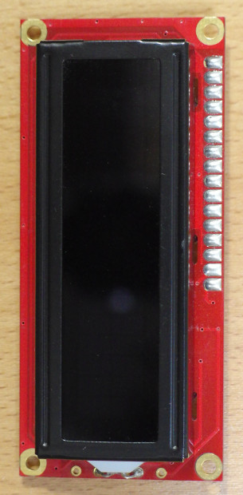
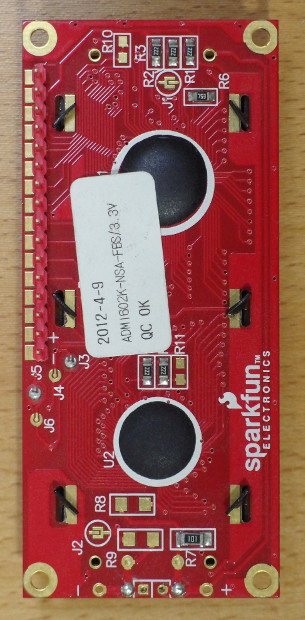
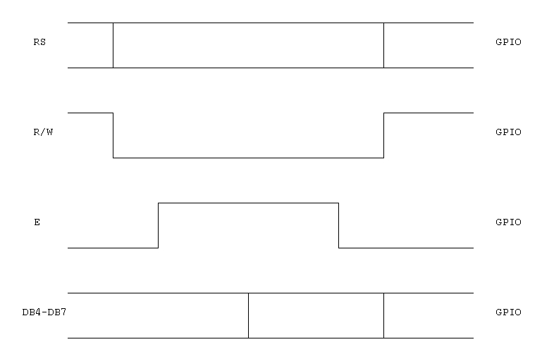
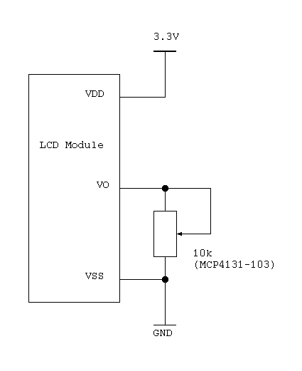

SparkFun Basic 16x2 Character LCD - Amber on Black 3.3V
(Xiamen ADM1602K-NSA-FBS/3.3V)
This is a 16 character by 2 line LCD display. It use the ST7066 controller.


| Pin no. | Symbol | Pin no. | Symbol | |
|---|---|---|---|---|
| 1 | VSS | 9 | DB2 | |
| 2 | VDD | 10 | DB3 | |
| 3 | VO | 11 | DB4 | |
| 4 | RS | 12 | DB5 | |
| 5 | R/W | 13 | DB6 | |
| 6 | E | 14 | DB7 | |
| 7 | DB0 | 15 | LED+ | |
| 8 | DB1 | 16 | LED- |
MPU interface

| Instruction | RS | R/W | DB7 - DB0 | Time |
|---|---|---|---|---|
| Clear display | 0 | 0 | 00000001 | 1.52 ms |
| Return home | 0 | 0 | 0000001x | 1.52 ms |
| Entry mode set | 0 | 0 | 000001[I/D]S | 37 us |
| Display ON/OFF | 0 | 0 | 00001DCB | 37 us |
| Cursor or display shift | 0 | 0 | 0001[S/C][R/L]xx | 37 us |
| Function set | 0 | 0 | 001[DL]NFxx | 37 us |
| Set CGRAM address | 0 | 0 | 01[A5][A4][A3][A2][A1][A0] | 37 us |
| Set DDRAM address | 0 | 0 | 1[A6][A5][A4][A3][A2][A1][A0] | 37 us |
| Read Busy flag and address | 0 | 1 | [BF][A6][A5][A4][A3][A2][A1][A0] | 0 us |
| Write data to RAM | 1 | 0 | [D7][D6][D5][D4][D3][D2][D1][D0] | 43 us |
| Read data from RAM | 1 | 1 | [D7][D6][D5][D4][D3][D2][D1][D0] | 43 us |
Contrast adjust
